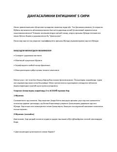

DYDangasalikni yengishning 5 ta asosiy sirini o'rganing.
Ushbu kitob dangasalik (prokrastinatsiya) ning kelib chiqish sabablari va uni yengish yo'llarini o'rgatadi. Perfeksionizm, dam olish va boshqa omillar misolida dangasalikni bartaraf etishning 5 ta asosiy siri ochib beriladi. Muallif o'z trening va kurslaridan olingan tajribalar asosida amaliy maslahatlar taqdim etadi.